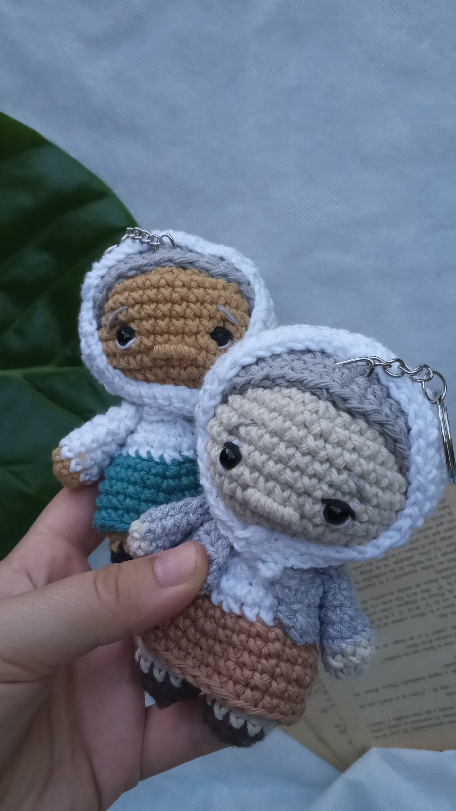
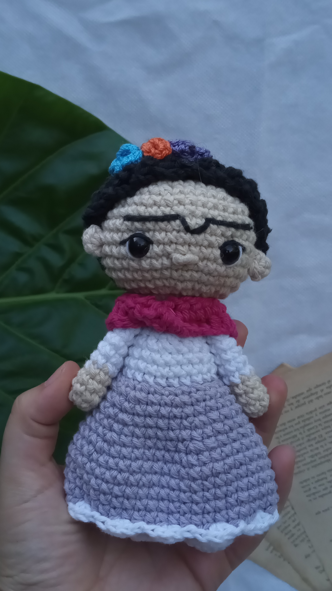
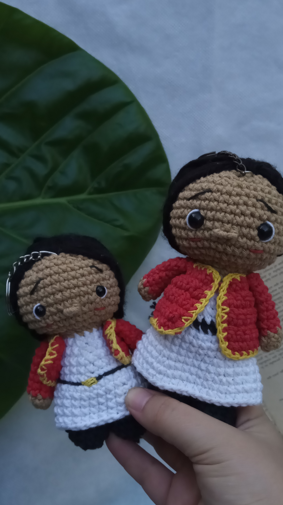
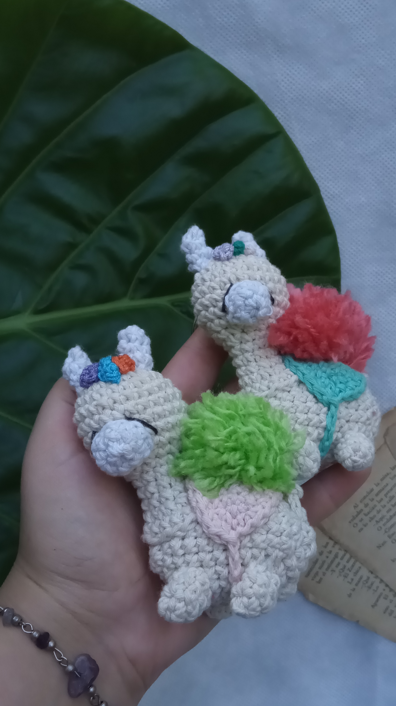
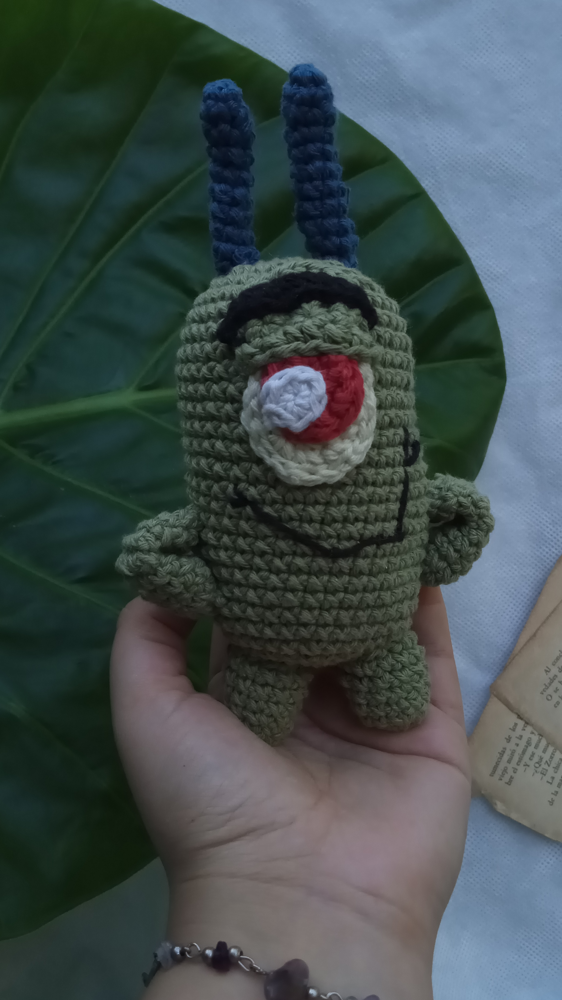
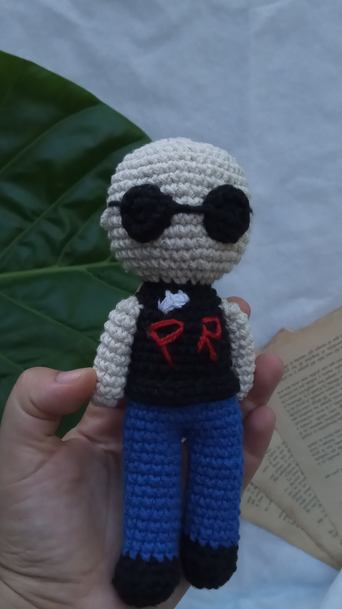
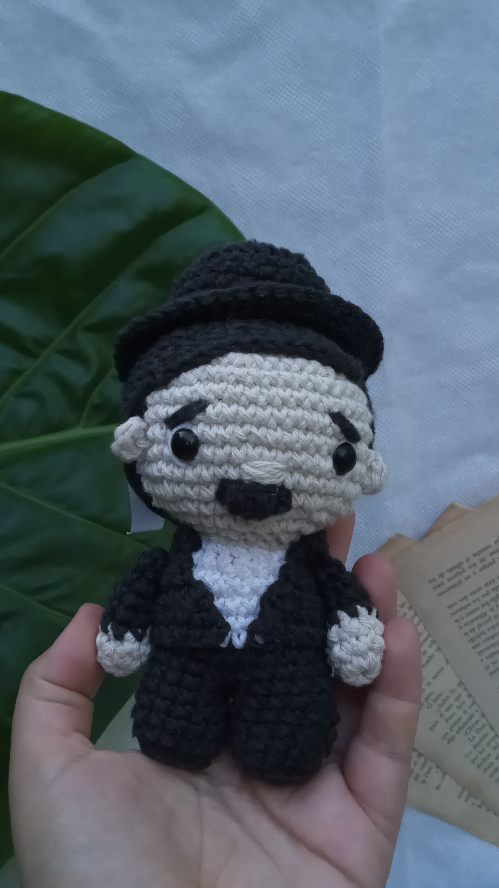
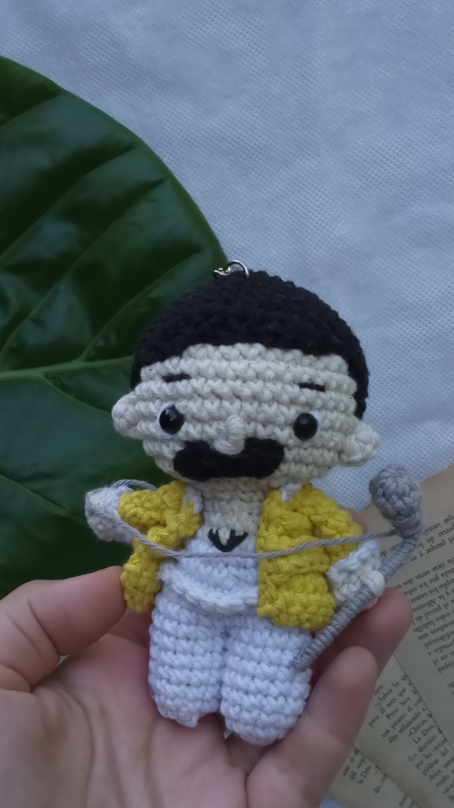
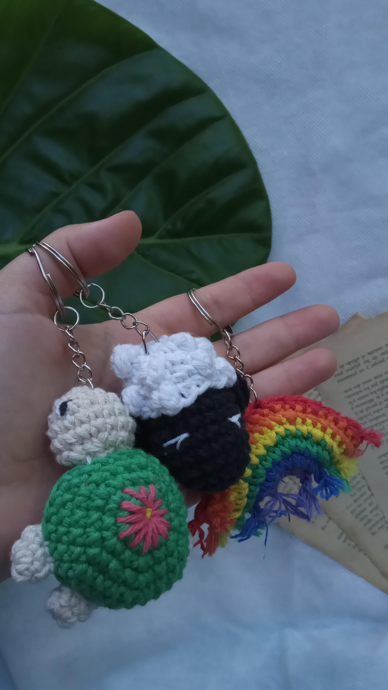

Disponible

Abuelas de la plaza
Tejiendo luchas y enseñanzas
Disponible
En Mi duende tejemos pequeños compañeros, uno por uno, con paciencia, cariño y un poquito de magia. ¡Conocé nuestros personajes y encontranos en las próximas ferias!

Cada personaje es único. Acá podés ver cuáles están disponibles, reservados o ya encontraron un hogar.

Tejiendo luchas y enseñanzas

Flor del alto Perú

Llamas tejidas

Tejido con mucho cariño.
Cada tejido tiene su personalidad. Compartimos algunos de los trabajos que fueron saliendo de nuestro taller.




Nos encanta encontrarnos en persona, mostrar lo que hacemos y compartir un ratito con ustedes.
📍 Lugar de la feria, localidad
Una breve descripción para contar qué vamos a llevar.
Próxima feria📍 Lugar, localidad
¡Pasá a saludarnos y conocer a nuestros personajes!
Próximo encuentroEl pequeño taller detrás de Mi duende
Somos quienes están detrás de Mi duende: un pequeño emprendimiento de personajes tejidos a crochet. Nos gusta crear piezas con identidad propia, cuidar cada detalle y poner un poquito de nuestra imaginación en cada puntada.
Esta página es una ventana a nuestro mundo: nuestros trabajos, los personajes que están disponibles y los lugares donde nos pueden encontrar.
Seguinos en redes para ver nuevos personajes, enterarte de las fechas y descubrir dónde estaremos.